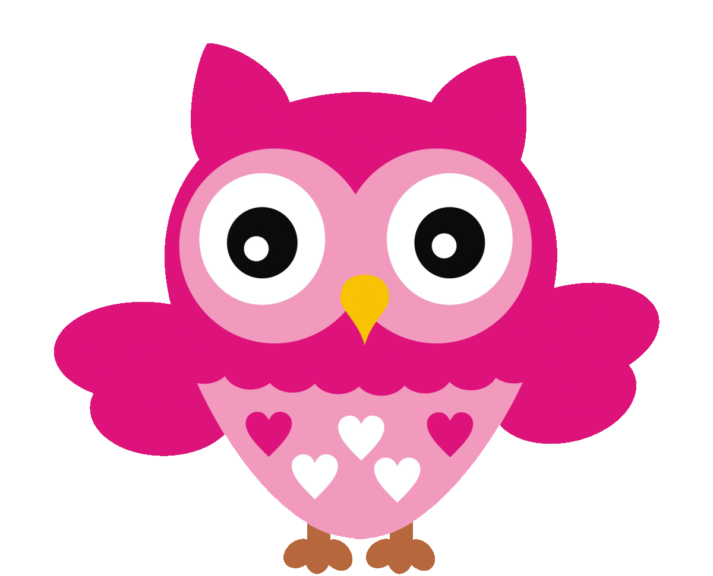
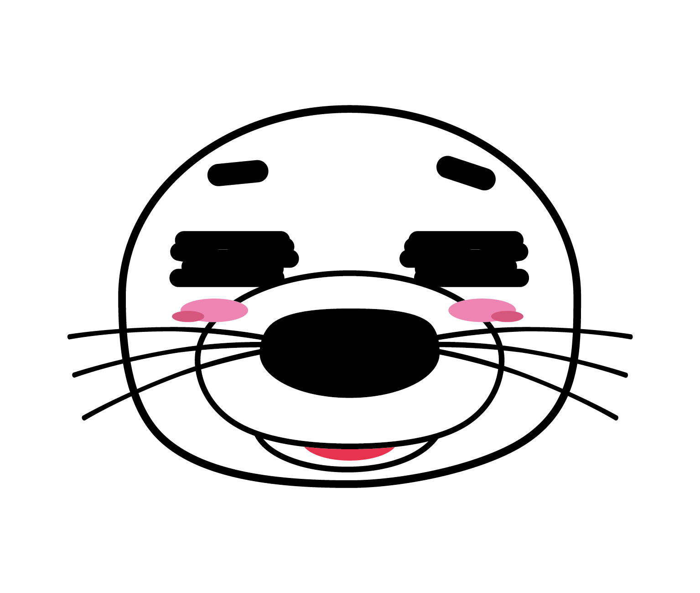
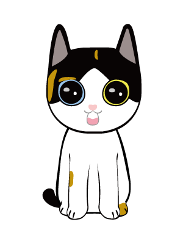
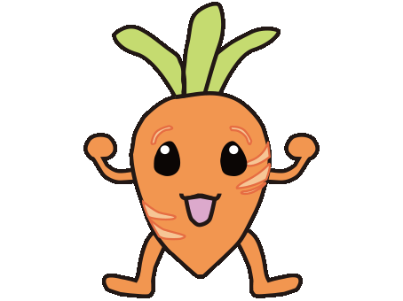
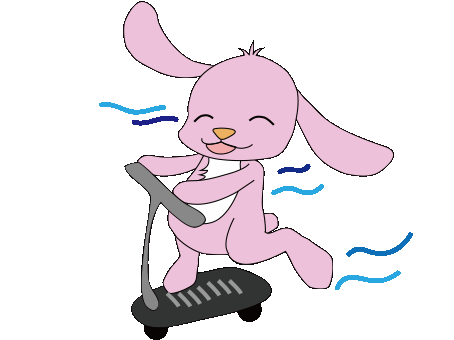

科技藝術課程
ch1
漫談數位藝術-1
ch2
漫談數位藝術-2
ch3
漫談數位藝術-3
ch4
漫談數位藝術-4
ch5
表演藝術
ch6
網路藝術－數位藝術
ch7
錄影藝術
ch8
軟體藝術
ch9
新媒體藝術
ch10
台灣藝術e檔案-1
ch11
台灣藝術e檔案-2
ch12
台灣藝術e檔案-3
ch13
台灣藝術e檔案-4
ch14
台灣藝術e檔案-5
科技音樂課程
ch1
文藝復興
ch2
巴洛克時期
ch3
古典時期
ch4
浪漫時期
ch5
現代音樂
ch6
電影音樂
ch7
新世紀音樂
ch8
數位音樂
ch9
國民音樂
關於製作團隊
國立臺南大學數位藝術與互動設計實驗室
指導老師 林豪鏘
團隊成員
馬毓君 陳凌漢 張小均 蘇倫可 彭麒安
蔡碧芬 林孟增 陳怡蓁 林語瑄 余玳均
蔡孟君 劉欣蘭 郭文鱗
版本 20190416
神秘號
線上人數
設定
請點選圖案，選擇陪伴您的情感助教

溫柔的陪伴者，充滿感情的智慧貓頭鷹，喜歡聽音樂
Designer: 毓君
Designer: 毓君
表演慾強，堪稱第一代ATS助教，陪伴DDLab很多年的老人
Designer: 宗遠 (2011)
Designer: 宗遠 (2011)

看似大喇喇但其實很細心，人人看到都會很想抱
Designer: 鋐達
Designer: 鋐達

人見人愛為了浪浪同伴們議題努力發聲，也是無可救藥的抹茶控
Designer: 海苔
Designer: 海苔


蘿蔔蔔與娜哩兔，兩個喜歡創作的好朋友
2013年初代Mobile ATS開發失敗後，轉成線上問答系統KnowLedgeTube助教
Designer: 宜軒
Designer: 宜軒